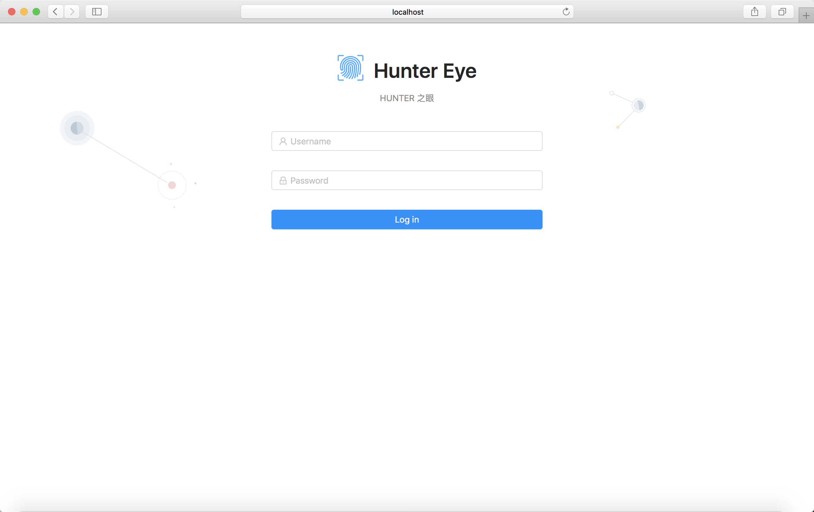
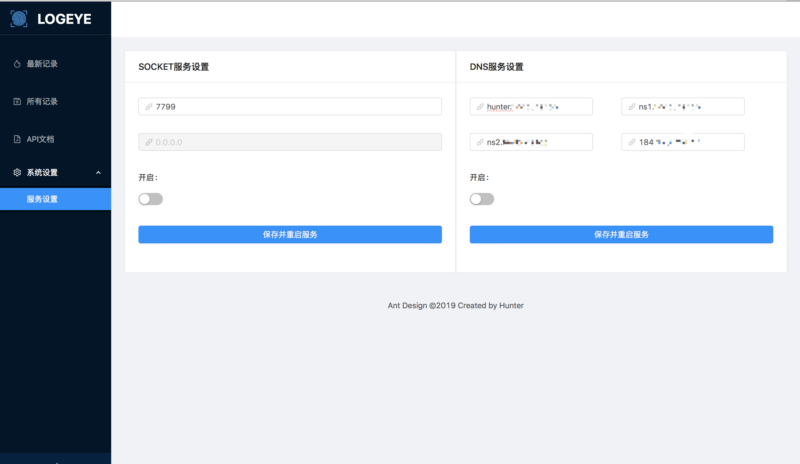
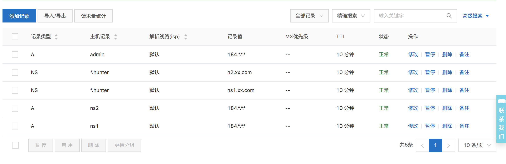
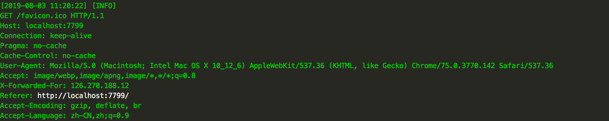
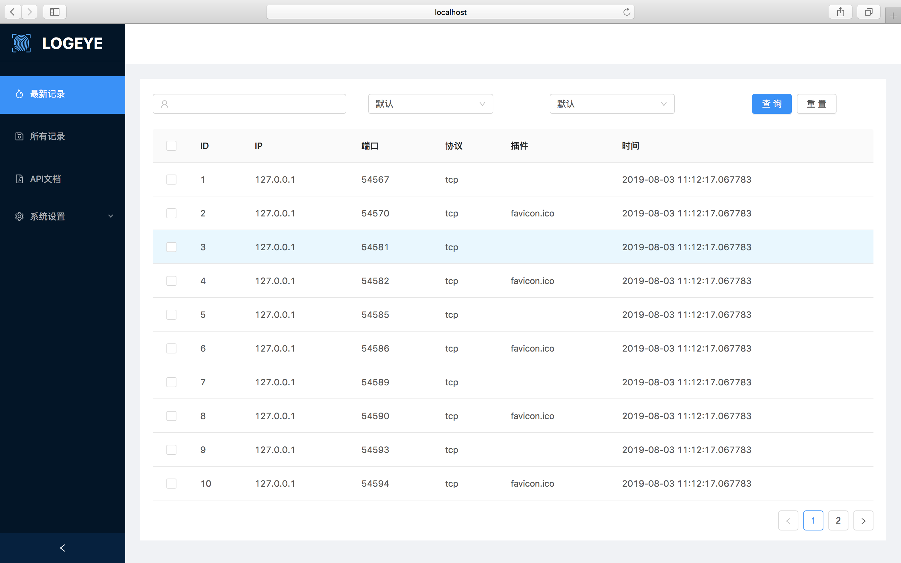

安装说明
1.安装python3
xxxxxxxxxxyum install python36 u -y
2.安装pip依赖
xxxxxxxxxxpip install -r requirements.txt
部署
开发环境
开发测试部署比较随意简单，分为启动后端服务和启动前端服务，主要用于开发调试使用
1.初始化数据库，设置登录账号密码和api key
xxxxxxxxxxpython init_db.py admin asqwqwqwqss 12y199912121&2612616212.启动后端api
xxxxxxxxxxsudo python main.py请以root权限运行，因为会涉及到检测端口占用冲突以及自动重启服务功能，如果启动无误，将会看到如下信息
xxxxxxxxxx _ _ _ _ | | | |_ _ _ __ | |_ ___ _ __| | ___ __ _ | |_| | | | | '_ \| __/ _ \ '__| | / _ \ / _` | | _ | |_| | | | | || __/ | | |__| (_) | (_| | |_| |_|\__,_|_| |_|\__\___|_| |_____\___/ \__, | |___/ author:b5mali4 version:0.2 License:Apache License 2.0 * Serving Flask app "main" (lazy loading) * Environment: production WARNING: This is a development server. Do not use it in a production deployment. Use a production WSGI server instead. * Debug mode: off * Running on http://0.0.0.0:8888/ (Press CTRL+C to quit)
3.启动前端
xxxxxxxxxxcd web/app/npm run start
4.访问登录

备注
本地测试的时候注意要访问localhost，你也可以修改web/app/src/utils/request.js中的变量host，将其修改成你的ip进行访问
xxxxxxxxxx//const dev_host = "http://localhost:8888/api/v1/";const test_host = "http://192.168.34.122:8888/api/v1/";const host = test_host;global.host = host;
生产环境
docker启动，进入项目目录docker，执行docker-compose up -d即可启动
备注
具体可以复制使用docker中的配置，以下为详情
生产环境使用uwsgi+nginx+supervisor的方式进行部署，主要流程如下:
1.安装uwsgi
xxxxxxxxxx[uwsgi]master = trueprocesses = 4 //内核数#http = 0.0.0.0:8000 //测试uwsgi的时候使用这个注释掉socketsocket = /home/tmp/DnsSocketLog.sock //socket 文件，用于和nginx通信，推荐不要放在项目目录下，不然可能会报错，提示找不到该文件pythonpath = /home/app/ //程序路径module = main //程序名字（和下面python文件名相同，不包含.py）wsgi-file = /home/app/main.py //python文件名callable = app //注意，python文件内的app需要作为全局变量引出，不然会找不到chmod-socket = 666touch-reload = /home/app/ //文件路径vacuum = true# 设置uwsgi后台运行，用uwsgi.log保存日志信息daemonize=uwsgi.log
2.安装nginx并配置，如下为配置文件
xxxxxxxxxxupstream program_name{#该sock文件与上面uwsgi配置文件内的sock文件应当为同一个文件，最好不要放在项目目录下，不然可能出显示找不到该文件。server unix:///home/tmp/app.sock;}# 配置服务器server {# 监听的端口号listen 80; # 这个是nginx输出的端口，也就是说后面你访问你的网站实例需要登录这个端口，添加端口映射时需要注意# 域名server_name 192.168.1.1; #此处填写域名或者ip，多个的情况下空格隔开charset utf-8;# 最大的文件上传尺寸client_max_body_size 75M;# 静态文件访问的urllocation /static {# 静态文件地址alias programdir/static; #此处填写static文件路径}# 最后，发送所有非静态文件请求到django服务器location / {uwsgi_pass oderaway;# uwsgi_params文件地址include /etc/nginx/uwsgi_params;}}
3.supervisor模块
xxxxxxxxxx# supervisor的程序名字[program:program_name] #program_name 该名称可以随意设置# supervisor执行的命令command=uwsgi --ini program_name_uwsgi.ini# 项目的目录directory = programdir# 开始的时候等待多少秒startsecs=0# 停止的时候等待多少秒stopwaitsecs=0# 自动开始autostart=true# 程序挂了后自动重启autorestart=true# 输出的log文件stdout_logfile=programdir/log/supervisord.log #这里你可能需要先创建log路径# 输出的错误文件stderr_logfile=programdir/log/supervisord.err#同上[supervisord]# log的级别loglevel=info# 使用supervisorctl的配置[supervisorctl]# 使用supervisorctl登录的地址和端口号serverurl = http://127.0.0.1:9001# 登录supervisorctl的用户名和密码username = 自定义password = 自定义[inet_http_server]# supervisor的服务器port = :9001# 用户名和密码username = 自定义password = 自定义[rpcinterface:supervisor]supervisor.rpcinterface_factory = supervisor.rpcinterface:make_main_rpcinterface
4.测试
打开supervisord服务
xxxxxxxxxxsupervisord -c /etc/supervisord.conf
查看是否在运行
xxxxxxxxxxps aux | grep supervisordps aux | grep program_name_uwsgi
进入supervisorctl查看是否托管成功；
5.
更多详情具体可以参考https://www.jianshu.com/p/d2da31b95a55
DNS模块
需要注册一个域名，假设为xxx.com，并且支持NS模式，具体步骤如下:
1.注册一个DNS服务器
xxxxxxxxxx添加两条A记录 ns1.xxx.com和ns2.xxx.com 并指向你的HunterLog服务器，默认53端口
2.配置一个作为Dns记录的域名
xxxxxxxxxx添加两条NS记录为 *.hunter.xx.com指向ns1.xx.com和ns2.xx.com表示所有访问以.hunter.xx.com结尾的DNS解析记录都将会被记录到hunterLog平台
3.为hunterlog管理后台配置一个域名
xxxxxxxxxx添加一条A记录指向hunterLog服务所在机器ip，默认是80端口
4.登录web后台启动启动DNS模块

具体域名相关配置如下，下图为我从阿里云购买的域名配置实例

配置并启动完成之后访问 pwn.hunter.xx.com也可以被记录到dns解析记录。
SOCKET模块
1.启动socket模块
xxxxxxxxxx登录成功之后，进入系统设置->服务设置，开启一个socket服务，看到log即成功，页面为仿niginx502的虚假页面。


登录后台即看到日志

表结构
请求日志表(ReqLog)
| ID | 目标IP | 目标端口 | 时间 | 插件名称 | 原始请求报文 | 时间戳 | 协议 |
|---|---|---|---|---|---|---|---|
| id | ip | port | time | plugin | recv_data | time stamp | protocol |
| 1 | 181.12.11.11 | 53423 | 2018-09-12 | xxe | GET / HTTP/1.1 | 1563171643.094 | Tcp |
| dns模式下时域名前缀 | tcp是由TcpServer启动的，udf是由Dns启动的 |
备注
可以清除删除，方便api调用
请求日志表(ReqLogDup)
| ID | 目标IP | 端口 | 时间 | 插件 | 原始请求报文 | 时间戳 |
|---|---|---|---|---|---|---|
| id | ip | port | time_str | plugin | recv_data | time stamp |
| 1 | 181.12.11.11 | 53423 | 2018-09-12 | xxe | GET / HTTP/1.1 | 1563171643.094 |
备注
和ReqLog结构内容一模一样，用于永久备份
用户列表(User)
| id | 用户名 | 密码 | api认证key |
|---|---|---|---|
| id | username | password | token |
| 1 | admin | admin | xsasuqhw121qwqwqz122 |
备注
暂无
系统设置(SystemSet)
| socket_port | socket_switch | fake_root_domain | ns1domain | ns2domain | server_ip | dns_switch |
|---|---|---|---|---|---|---|
| 开启的socket通信端口 | socket开关 | 表示访问任何以其结尾的域名都将会被记录 | 一个域名，配置A记录指向一个DNS服务器，该DNS服务器记录所有访问FAKE_ROOT_DOMAIN结尾的域名记录 | 个域名，配置A记录指向一个DNS服务器，该DNS服务器记录所有访问FAKE_ROOT_DOMAIN结尾的域名记录 | DNS服务器ip，NS1_DOMAIN和NS2_DOMAIN配置A记录指向的IP | dns开启开关 |
| 7799 | true | hunter.findbugs.top | ns1.findbugs.top | ns2.findbugs.top | 184.170.214.47 | true |
备注
用于后台api设置，正常情况下不要修改
系统API
显示最新纪录
请求
xxxxxxxxxxGET /api/v1/requestlogs HTTP/1.1Host: 10.211.55.2:3001User-Agent: Mozilla/5.0 (Macintosh; Intel Mac OS X 10_12_6) AppleWebKit/537.36 (KHTML, like Gecko) Chrome/75.0.3770.142 Safari/537.36Accept: */*Referer: http://10.211.55.2:3001/historyrecordAccept-Encoding: gzip, deflateAccept-Language: zh-CN,zh;q=0.9Connection: close
响应
xxxxxxxxxxHTTP/1.1 200 OKServer: nginx/1.12.2Date: Sun, 04 Aug 2019 08:07:18 GMTContent-Type: application/jsonContent-Length: 298Connection: close{"data": [{"id": 1,"ip": "192.168.16.1","plugin": "","port": "36686","protocol": "tcp","time_str": "2019-08-04 16:01:43.715104"},{"id": 2,"ip": "192.168.16.1","plugin": "favicon.ico","port": "36688","protocol": "tcp","time_str": "2019-08-04 16:01:43.715104"}],"message": "查询成功","status": 200}
删除指定记录
请求
xxxxxxxxxxDELETE /api/v1/requestlogs HTTP/1.1Host: 10.211.55.2:3001Content-Length: 10Origin: http://10.211.55.2:3001User-Agent: Mozilla/5.0 (Macintosh; Intel Mac OS X 10_12_6) AppleWebKit/537.36 (KHTML, like Gecko) Chrome/75.0.3770.142 Safari/537.36Content-Type: application/jsonAccept: */*Referer: http://10.211.55.2:3001/latestrecordAccept-Encoding: gzip, deflateAccept-Language: zh-CN,zh;q=0.9Connection: close{"id":[1]}
响应
xxxxxxxxxxHTTP/1.1 200 OKServer: nginx/1.12.2Date: Sun, 04 Aug 2019 08:09:47 GMTContent-Type: application/jsonContent-Length: 81Connection: close{"data": [],"message": "成功删除1条数据","status": 200}
显示备份纪录
请求
xxxxxxxxxxGET /api/v1/requestlogdupsHost: 10.211.55.2:3001User-Agent: Mozilla/5.0 (Macintosh; Intel Mac OS X 10_12_6) AppleWebKit/537.36 (KHTML, like Gecko) Chrome/75.0.3770.142 Safari/537.36Accept: */*Referer: http://10.211.55.2:3001/historyrecordAccept-Encoding: gzip, deflateAccept-Language: zh-CN,zh;q=0.9Connection: close
响应
xxxxxxxxxxHTTP/1.1 200 OKServer: nginx/1.12.2Date: Sun, 04 Aug 2019 08:07:18 GMTContent-Type: application/jsonContent-Length: 298Connection: close{"data": [{"id": 1,"ip": "192.168.16.1","plugin": "","port": "36686","protocol": "tcp","time_str": "2019-08-04 16:01:43.715104"},{"id": 2,"ip": "192.168.16.1","plugin": "favicon.ico","port": "36688","protocol": "tcp","time_str": "2019-08-04 16:01:43.715104"}],"message": "查询成功","status": 200}
显示SOCKET设置
请求
xxxxxxxxxxGET /api/v1/system_set/socket HTTP/1.1Host: 10.211.55.2:3001User-Agent: Mozilla/5.0 (Macintosh; Intel Mac OS X 10_12_6) AppleWebKit/537.36 (KHTML, like Gecko) Chrome/75.0.3770.142 Safari/537.36Accept: */*Referer: http://10.211.55.2:3001/resolversetAccept-Encoding: gzip, deflateAccept-Language: zh-CN,zh;q=0.9Connection: close
响应
xxxxxxxxxxHTTP/1.1 200 OKServer: nginx/1.12.2Date: Sun, 04 Aug 2019 08:12:32 GMTContent-Type: application/jsonContent-Length: 101Connection: close{"data": {"socket_port": 7799,"socket_switch": true},"message": "查询成功","status": 200}
更改SOCKET设置
请求
xxxxxxxxxxPUT /api/v1/system_set/socket HTTP/1.1Host: 10.211.55.2:3001Content-Length: 41Origin: http://10.211.55.2:3001User-Agent: Mozilla/5.0 (Macintosh; Intel Mac OS X 10_12_6) AppleWebKit/537.36 (KHTML, like Gecko) Chrome/75.0.3770.142 Safari/537.36Content-Type: text/plain;charset=UTF-8Accept: */*Referer: http://10.211.55.2:3001/resolversetAccept-Encoding: gzip, deflateAccept-Language: zh-CN,zh;q=0.9Cookie: session=xxxxX-Forwarded-For: 126.270.188.12Connection: close{"socket_port":7799,"socket_switch":true}
响应
hunter扫描器调用的查询接口
先生成一个uuid作为表示此次扫描任务的唯一标识
请求
xxxxxxxxxxGET /api/v1/hunter/{uuid} HTTP/1.1Host: 127.0.0.1:8888User-Agent: python-requests/2.22.0Accept-Encoding: gzip, deflateAccept: */*Connection: keep-alivetoken: 12121zaaa
| token | uuid | |
|---|---|---|
| api认证的token | 插件生成的uuid |
响应
token不对
xxxxxxxxxx{'data': [], 'message': 'token错误', 'status': 403}
找到记录
xxxxxxxxxx{'data': [{'id': 2,'ip': '127.0.0.1','plugin': '3y9Y','port': '60359','protocol': 'tcp','recv_data': 'GET /3y9Y HTTP/1.1\r\nHost: 127.0.0.1:7799\r\nUser-Agent: python-requests/2.22.0\r\nAccept-Encoding: gzip, deflate\r\nAccept: */*\r\nConnection: keep-alive\r\n\r\n','time_stamp': '1564973253.0','time_str': '2019-08-05 10:47:33.883743'}],'message': '查找到记录','status': 200}
未找到记录
xxxxxxxxxx{'data': [], 'message': '未查找到记录', 'status': 400}